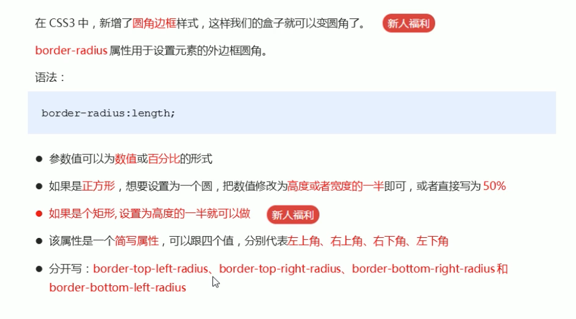

<!DOCTYPE html>
<html lang="en">
  <head>
    <meta charset="UTF-8" />
    <meta name="viewport" content="width=device-width, initial-scale=1.0" />
    <title>Document</title>
    <style>
      div {
        margin: 30px 0px;
      }
      .circle {
        background-color: blue;
        height: 300px;
        width: 300px;
        border-radius: 50%px;
      }
      .oval {
        background-color: brown;
        height: 50px;
        width: 300px;
        border-radius: 25px;
      }
      .rectangle {
        background-color: rgb(45, 196, 138);
        height: 300px;
        width: 300px;
        border-radius: 50% 50% 0 0;
      }
    </style>
  </head>
  <body>
    
    <h1>border-radius: 參數;</h1>
    <ul>
      <li>他會在四個腳分別給予四個圓形進行切割</li>
      <li>給予的參數,等於該圓的半徑</li>
      <li>當參數>=該物件寬度時,四個圓將會疊加成一個圓,此時就可做出圓形物件</li>
    </ul>
    <div class="circle"></div>

    <h1>2.設置長方形圓角,將參數設置成高度的一半,單位為px</h1>
    <div class="oval"></div>
    <h1>3.border-radius:可以個別對四個角下參數</h1>
    <ul>
      <li>參數順序分別是,左上 右上 右下 左下</li>
      <li>例子：border-radius: 50% 50% 0 0;</li>
    </ul>
    <div class="rectangle"></div>
  </body>
</html>
